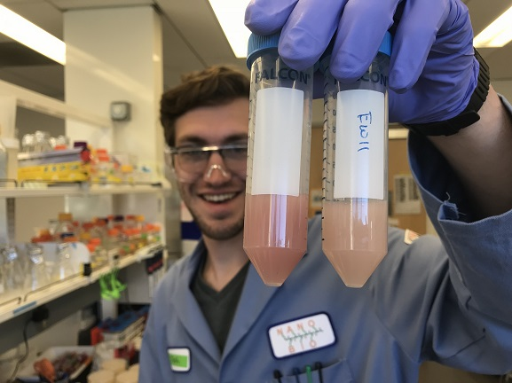

Education
Rice University
2013 - PresentHouston, Texas
PhD candidate
Systems, Synthetic, and Physical Biology
University of Michigan
2009 - 2012Ann Arbor, Michigan
Bachelor of Science
Microbiology
Minor - Asian Studies
Research
Graduate Student
I've been developing synthetic cellular systems for studying the in vivo activity of cytosolic electron transfer proteins (e.g., ferredoxins and flavodoxins) which I’ve been using to study electron transfer partner specificity and for developing synthetic protein switches.
Department of Energy - Office of Science Graduate Student Research Fellow
I've been collaborating with Caroline Ajo-Franklin’s group at Lawrence Berkeley National Lab to incorporate an extracellular electron transport chain into my cellular systems to study electron flow more directly and to build bioelectronic devices.
Student Researcher and Lab Technician
I worked on formultation and stability of nanoemulsions containing biomolecules for vaccine and antimicrobial applications.
Undergraduate Researcher
I studied the formation of the symbiotic relationship between luminescent bacteria and deep sea fishes. I performed anatomical microscopy to discover at what larval stage grenadier fish horizontially acquire symbiotic bacteria in their nascent light organs. Using bioinformatic techniques, I annotated the Vibrionaceae lux-rib operon in the genome of a novel symbiont isolate from the sea-urchin cardinalfish.
Honors and Awards
2018-19
Lodieska Stockbridge Vaughn Fellowship
2017-18
Department of Energy - Office of Science Graduate Student Research Fellowship
2014-17
National Science Foundation Graduate Research Fellowship
2014
NASA Space Technology Research Fellowship, Declined
Publications
- Circular permutation profiling by deep sequencing libraries created using transposon mutagenesis. J.T. Atkinson*, A.J. Jones*, Q. Zhou, J.J. Silberg, 2018, Nucleic Acids Research, gky255
- Cellular assays for ferredoxins: a strategy to understand electron flow through protein carriers that link metabolic pathways. J.T. Atkinson, I. J. Campbell, G.N. Bennett, J.J. Silberg. 2016, Biochemistry, 55(51), pp 7047–64
- PERMutation Using Transposase Engineering (PERMUTE): a simple approach for constructing circularly permuted protein libraries. A.M. Jones, J.T. Atkinson, and J. J. Silberg. 2016, Ch19 In Vitro Mutagenesis., Methods in Molecular Biology, 1498, pp 295-308
- The structure of a thermophilic kinase shapes fitness upon random circular permutation. A.M. Jones, M.M. Mehta, E.E. Thomas, J.T. Atkinson, T.H. Segall-Shapiro, S. Liu, and J. J. Silberg. 2016, ACS Synthetic Biology, 5, pp 415-25
- Identification of multiple dityrosine bonds in materials composed of the Drosophila protein Ultrabithorax. D.W. Howell, S.P. Tsai, K. Churion, J. Patterson, C. Abbey, J.T. Atkinson, D. Porterpan, Y.H. You, K.E. Meissner, K.J. Bayless. 2015, Advanced Functional Materials, 25(37), pp 5988-98
- Genome Sequence of Photobacterium mandapamensis svers.1.1., bioluminescent symbiont of the cardinalfish Siphamia versicolor. Urbanczyk, H., Y. Ogura, T.A. Hendry, A.L. Gould, N. Kiwaki, J.T. Atkinson, T. Hayashi, and P.V. Dunlap. 2011, J. of Bacteriology, 193(12), pp 3144-5
(*Co-first authors)
Copyright Joshua Atkinson 2018